PaperWeekly 第二十二期
引言
Image Caption是一个融合计算机视觉、自然语言处理和机器学习的问题，它类似于翻译一副图片为一段描述文字。该任务对于人类来说非常容易，但是对于机器却非常具有挑战性，它不仅需要利用模型去理解图片的内容并且还需要用自然语言去表达它们之间的关系。除此之外，模型还需要能够抓住图像的语义信息，并且生成人类可读的句子。
随着机器翻译和大数据的兴起，出现了Image Caption的研究浪潮。当前大多数的Image Caption方法基于encoder-decoder模型。其中encoder一般为卷积神经网络，利用最后全连接层或者卷积层的特征作作为图像的特征，decoder一般为递归神经网络，主要用于图像描述的生成。由于普通RNN存在梯度下降的问题，RNN只能记忆之前有限的时间单元的内容，而LSTM是一种特殊的RNN架构，能够解决梯度消失等问题，并且其具有长期记忆，所以一般在decoder阶段采用LSTM.
问题描述
Image Caption问题可以定义为二元组(I,S)的形式， 其中I表示图，S为目标单词序列，其中S={S1,S2,…}，其中St为来自于数据集提取的单词。训练的目标是使最大似然p(S|I)取得最大值，即使生成的语句和目标语句更加匹配，也可以表达为用尽可能准确的用语句去描述图像。
数据集
论文中常用数据集为Flickr8k,Flick30k,MSCOCO,其中各个数据集的图片数量如下表所示。
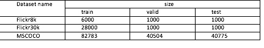
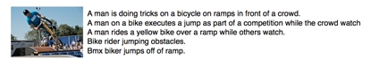
数据集图片和描述示例如图
其中每张图像都至少有5张参考描述。为了使每张图像具有多种互相独立的描述，数据集使用了不同的语法去描述同一张图像。如示例图所示，相同图像的不同描述侧重场景的不同方面或者使用不同的语法构成。
模型
本文主要介绍基于神经网络的方法
1 NIC[1]
Show and Tell: A Neural Image Caption Generator
本文提出了一种encoder-decoder框架，其中通过CNN提取图像特征，然后经过LSTM生成目标语言，其目标函数为最大化目标描述的最大似然估计。
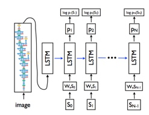
该模型主要包括encoder-decoder两个部分。encoder部分为一个用于提取图像特征的卷积神经网络，可以采用VGG16，VGG19, GoogleNet等模型, decoder为经典的LSTM递归神经网络，其中第一步的输入为经过卷积神经网络提取的图像特征，其后时刻输入为每个单词的词向量表达。对于每个单词首先通过one-hot向量进行表示，然后经过词嵌入模型，变成与图像特征相同的维度。
2 MS Captivator[2]
From captions to visual concepts and back
本文首先利用多实例学习，去训练视觉检测器来提取一副图像中所包含的单词，然后学习一个统计模型用于生成描述。对于视觉检测器部分，由于数据集对图像并没有准确的边框标注，并且一些形容词、动词也不能通过图像直接表达，所以本文采用Multiple Instance Learning(MIL)的弱监督方法，用于训练检测器。
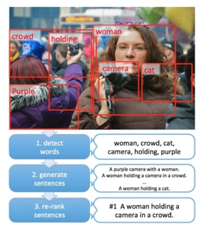
3 Hard-Attention Soft-Attention[3]
Show, atten and tell: Neural image caption generation with visual attention
受最近注意机制在机器翻译中发展的启发，作者提出了在图像的卷积特征中结合空间注意机制的方法，然后将上下文信息输入到encoder-decoder框架中。在encoder阶段，与之前直接通过全连接层提取特征不同，作者使用较低层的卷积层作为图像特征，其中卷积层保留了图像空间信息，然后结合注意机制，能够动态的选择图像的空间特征用于decoder阶段。在decoder阶段，输入增加了图像上下文向量，该向量是当前时刻图像的显著区域的特征表达。
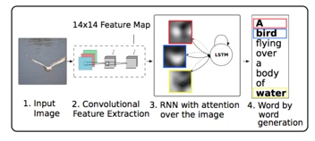
4 gLSTM[4]
Guiding long-short term memory for image caption generation
使用语义信息来指导LSTM在各个时刻生成描述。由于经典的NIC[1]模型，只是在LSTM模型开始时候输入图像，但是LSTM随着时间的增长，会慢慢缺少图像特征的指导，所以本文采取了三种不同的语义信息，用于指导每个时刻单词的生成，其中guidance分别为Retrieval-based guidance (ret-gLSTM), Semantic embedding guidance(emb-gLSTM) ,Image as guidance (img-gLSTM).
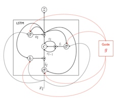
5 sentence-condition[5]
Image Caption Generation with Text-Conditional Semantic Attention
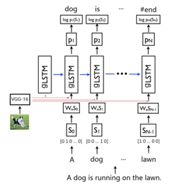
该模型首先利用卷积神经网络提取图像特征，然后结合图像特征和词嵌入的文本特征作为gLSTM的输入。由于之前gLSTM的guidance都采用了时间不变的信息，忽略了不同时刻guidance信息的不同，而作者采用了text-conditional的方法，并且和图像特征相结合，最终能够根据图像的特定部分用于当前单词的生成。
6 Att-CNN+LSTM [6]
What value do explicit high level concepts have in vision to language problems?
如图，作者首先利用VggNet模型在ImageNet数据库进行预训练，然后进行多标签数训练。给一张图片，首先产生多个候选区域，将多个候选区域输入CNN产生多标签预测结果，然后将结果经过max pooling作为图像的高层语义信息，最后输入到LSTM用于描述的生成。该方法相当于保留了图像的高层语义信息，不仅在Image Caption上取得了不错的结果，在VQA问题上，也取得很好的成绩。
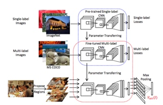
7 MSM[7]
BOOSTING IMAGE CAPTIONING WITH ATTRIBUTES
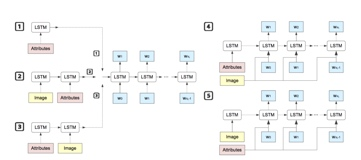
该文研究了图像属性特征对于描述结果的影响，其中图像属性特征通过多实例学习[2]的方法进行提取。作者采用了五种不同的组合形式进行对比。其中第3种、第5种，在五种中的表现出了比较好的效果。由于提取属性的模型，之前用于描述图像的单词的生成，所以属性特征能够更加抓住图像的重要特征。而该文中的第3种形式，相当于在NIC模型的基础上，在之前加上了属性作为LSTM的初始输入，增强了模型对于图像属性的理解。第5种，在每个时间节点将属性和文本信息进行结合作为输入，使每一步单词的生成都能够利用图像属性的信息。
8 When to Look[8]
Knowing When to Look: Adaptive Attention via A Visual Sentinel for Image Captioning
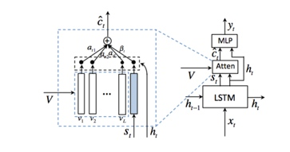
该文主要提出了何时利用何种特征的概念。由于有些描述单词可能并不直接和图像相关，而是可以从当前生成的描述中推测出来，所以当前单词的生成可能依赖图像，也可能依赖于语言模型。基于以上思想，作者提出了“视觉哨兵”的概念，能够以自适应的方法决定当前生成单词，是利用图像特征还是文本特征。
当前结果
本文列出的模型的在COCO测试集上的结果如下：
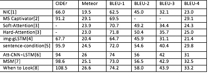
以下为online MSCOCO testing server的结果：
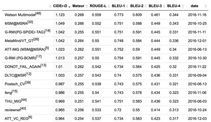
总结
最近的Image Caption的方法，大多基于encoder-decoder框架，而且随着flickr30,mscoco等大型数据集的出现，为基于深度学习的方法提供了数据的支撑，并且为论文实验结果的比较提供了统一的标准。模型利用之前在机器翻译等任务中流行的Attention方法，来加强对图像有效区域的利用，使在decoder阶段，能够更有效地利用图像特定区域的特征[3]。模型利用图像的语义信息在decoder阶段指导单词序列的生成，避免了之前只在decoder开始阶段利用图像信息，从而导致了图像信息随着时间的增长逐渐丢失的问题[4][5]。模型为了更好的得到图像的高层语义信息，对原有的卷积神经网络进行改进，包括利用多分类和多实例学习的方法，更好的提取图像的高层语义信息，加强encoder阶段图像特征的提取[6][7]。随着增强学习，GAN等模型已经在文本生成等任务中取得了不错的效果，相信也能为Image Caption效果带来提升。
参考文献
- Vinyals O, Toshev A, Bengio S, et al. Show and tell: A neural image caption generator[J]. Computer Science, 2015:3156-3164.
- Fang H, Gupta S, Iandola F, et al. From captions to visual concepts and back[C]// IEEE Conference on Computer Vision and Pattern Recognition. IEEE, 2015:1473-1482.
- Xu K, Ba J, Kiros R, et al. Show, Attend and Tell: Neural Image Caption Generation with Visual Attention[J]. Computer Science, 2016:2048-2057.
- Jia X, Gavves E, Fernando B, et al. Guiding Long-Short Term Memory for Image Caption Generation[J]. 2015.
- Zhou L, Xu C, Koch P, et al. Image Caption Generation with Text-Conditional Semantic Attention[J]. 2016.
- Wu Q, Shen C, Liu L, et al. What Value Do Explicit High Level Concepts Have in Vision to Language Problems?[J]. Computer Science, 2016.
- Yao T, Pan Y, Li Y, et al. Boosting Image Captioning with Attributes[J]. 2016.
- Lu J, Xiong C, Parikh D, et al. Knowing When to Look: Adaptive Attention via A Visual Sentinel for Image Captioning[J]. 2016.